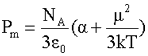

Caution
Non-ionizing radiation symbol

The electric dipole moment (μ, charge x displacement) of a molecule is directed from the center of negative charge (-q) to the center of positive charge (+q) distance r away. The units are usually given in Debye (D = 3.336 ˣ 10−30 C ˣ m. D has a handy size but is not an SI unit.
μ = q ˣ r
In liquid water, water molecules possess a distribution of dipole moments (range ≈ 1.9 - 3.1 D) due to various hydrogen-bonded environments.
If two charges q1 and q2, are separated by distance r, the (Coulomb) potential energy is V (joule)
where ε0 is the permittivity of a vacuum (= 8.854 ˣ 10−12 ˣ C2 ˣ J−1 ˣ m−1; the ability of a material to store electrostatic energy).
In a medium, it is lower
where ε is the medium's permittivity.
The dielectric constant (εr) of the medium (also known as the relative permittivity) is defined as
and approaches unity in the dilute gas state. In liquid
water, it is proportional to the mean-square fluctuation in the
total dipole moment. In liquid water, the dielectric
constant is high, and there is a linear correlation between it
and the number of hydrogen bonds [239]. [Back to Top  ]
]
The dipole moment (μ) and the dielectric constant (ε) of liquid water are related by the relationship,
where ε0, ε∞, g, μ, k, T, NA, and Vmol are measured dielectric constant, the dielectric constant at a frequency sufficiently low for atomic and electronic polarization but sufficiently high for intermolecular relaxation processes, the parameter of local ordering degree related to the probability of the central water molecule instantaneously hydrogen-bonding to surrounding molecules, the dipole moment in the vapor phase, the Boltzmann constant, the temperature in K, Avagadro's number and molar volume, respectively [2727].
Effect of temperature and pressure on the dielectric constant
from [3165]
Increasing temperature reduces the dielectric constant of pure water [423] and ice, whereas increasing pressure increases this dielectric constant, see opposite.
The combined pressure and temperature dependence
of the dielectric constant has been described as a (poor) approximation to a generalized Curie-Weiss state law (see the dotted straight lines opposite for this straight-line law) [423].
Effect of temperature on the dielectric constant
from [3571]
The polarization (P) of a substance is its electric dipole moment density (see also). The charge density vector (D) is the sum of the effect of the applied field and the polarization.
D = ε0 ˣ E + P
However as
D = ε ˣ E
P = (εr - 1) ˣ ε0 ˣ E
The relative permittivity (dielectric constant) (εr) is related to the molar polarization of the medium (Pm) using the Debye equation,
where ρ is the mass density (kg ˣ m−3), M is the molar mass (kg). At high relative permittivity (dielectric constant), such as in water, the left-hand side of the above equation approximates to unity. The molar polarization (calculated from equation(1) below) equals 181.5x10−6 m3 at 25 °C and should approximate to the molar volume (18.0685x10−6 m3 at 25 °C), but it clearly does not in the case of water. The molar polarization of the medium (Pm) is defined as
 (1)
where α is the polarizability of the molecules, a which is the proportionality constant between the induced dipole moment μ* and the field strength E (μ* = αE), NA is the Avogadro number, Mk is the Boltzmann constant (=R/NA), T is the absolute temperature, and μ is permanent dipole moment. Unfortunately, in line with many other water anomalies, this equation is not a good predictor for the behavior of water, which shows a minimum molar polarization at about 15 °C. The term in (εr + 2) comes from the relationship between the local field (E') and the applied field (E).
E' = (E/3) ˣ (εr + 2)
The polarizability (α) may be given as the polarizability volume (α´) where

The second term in equation (1) is due to the contribution from the permanent dipole moment, which is negligible when the medium is nonpolar or when the frequency of the applied field is sufficiently high that the molecules do not have time to change orientation. In this case, the Clausius-Mossotti equation holds (but again not for water):
[Back to Top  ]
]
Refractive index of water, from [2573]
The refractive index (ηr) in the visible and ultraviolet [2573] is the ratio of the speed of light in a vacuum (c) to that in the medium (c´); ηr = c/c´. It is also related to the relative permittivity (εr), the absorption coefficient (α), and wavelength (λ) [177].
This equation reduces to approximately
ε∞ = ηr2
where ε∞ is the relative permittivity at visible frequencies (400 THz - 800 THz, ηr ≈ 1.34). ε∞ represents the total polarizability (atomic + electronic), whereas ηr2 represents the electronic polarizability only. In most liquids, the atomic polarizability amounts only to about 10% of the electronic polarizability, in contrast, in water ε∞ ≈ 2 ˣ ηr2, an anomalously high value as the atomic and electronic polarizability are approximately equal [2884].
Brocken Spectre
The change in refractive index with wavelength within the range of visible light gives rise to rainbows and Brocken Spectres (see left).
The refractive index of water (η) at any given wavelength in the visible spectrum, and between 0 °C and 60 °C, may be described by the equation
where ρ is the density, β is the isothermal compressibility, T is the temperature in kelvin, and A and C are constants independent of pressure up to 110 MPa within this temperature range [3945].
[Back to Top  ]
]
a The polarizability describes the change in dipole moment in the presence of an electric field. [Back]
Home | Site Index | Microwaves | Complex dielectric permittivity | Water molecule | Water spectra | Magnetic effects | Notes | LSBU | Top
This page was established in 2001 and last updated by Martin Chaplin on 9 October, 2021